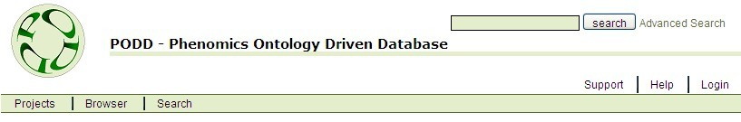

Support and Help are provided to both the Public and Registered PODD users. These two links are displayed on the right hand side of the navigation bar.

Figure 18.1 – Support an Help links on the Navigation Bar
By clicking the "Support" link on the navigation bar, the users can access information on support options, system information and FAQs.
* Note that Support and Help menu options and page access may differ for Public Access users versus Registered users.
The support screen display a navigatable sub menu in the LHS (viewers perspective) of the main pane (see Figure 18.2). Each menu will link to a Section.
Figure 18.2 – Sub menu layout of the Suppport screen
The options in this menu is compiled from Sections that the user has access to. The top most menu item is displayed by default. For registered users this is "Support Desk". For public users this is "About PODD". The user selects the required support section through this menu.
Support screens that public users do not have access to will not be accessible (even via a URL).
Support section information is provided as HTML format files. PODD based screens will not be provided for updating this information.
Help screens provide online user documentation on how to use the system. Help screens will be available based on user access (e.g. A project member will not see the Project Creation help screen, a public access user will not see the Edit Object help screen).
Help screens will be linked via the Help link in the Primary Navigation menu and via individual help icons on the PODD screens.